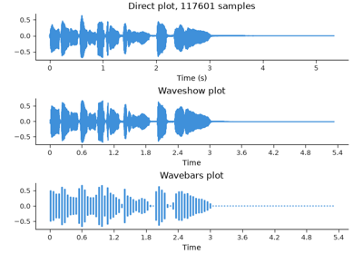
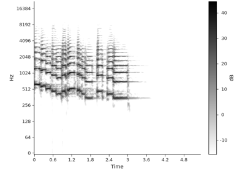
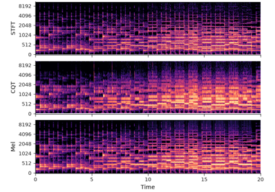
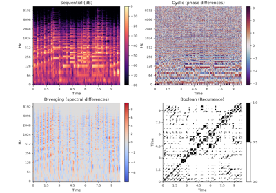
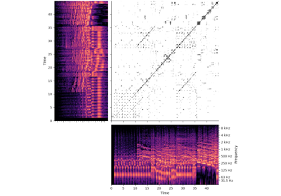
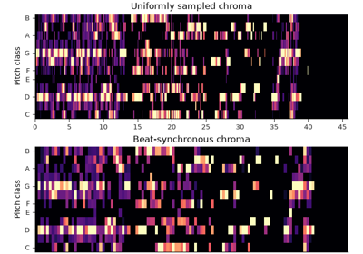
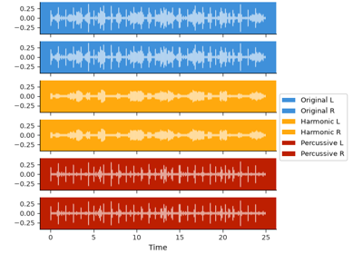
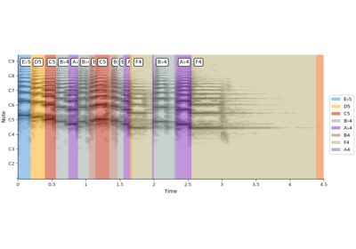

Display and visualization#  Visualizing audio waveforms Visualizing audio waveforms  Visualizing time-frequency content Visualizing time-frequency content  Using different frequency axes Using different frequency axes  Using color effectively Using color effectively  Visualizing non-spectral data Visualizing non-spectral data  Non-uniform coordinate grids Non-uniform coordinate grids  Multi-channel display Multi-channel display  Annotations and mir_eval integration Annotations and mir_eval integration